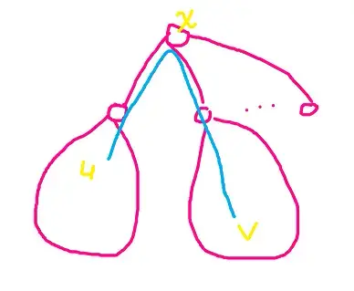
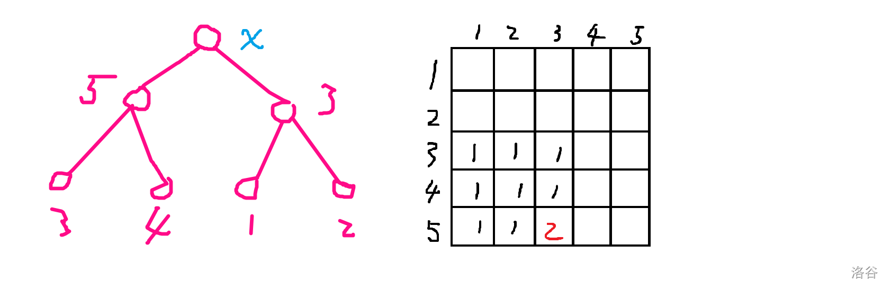

もとの題
题意
给定一棵 n 个节点的树，让你在这 n 个节点上染色，有 k 种颜色可选，ai 为第 i 个节点的颜色。
给出一个合并函数 ⊗，使得对于所有的、没有祖先关系的两个节点 u,v，有 au⊗av=alca(u,v)，求出能够满足条件的染色方案数，对 109+7 取模。
1≤n,∑n≤105，2≤k≤5，1≤fi<i。
思路
我们可以发现当 u,v 没有祖先关系时，他们一定会在以某一个节点 x 的某两个儿子为根的子树上（这不是废话么）。
那么就可以 分别 在 x 的两个儿子的子树中选一个点，这两个点叫 u,v，使得 lca(u,v)=x。

有了 u,v,x，且 lca(u,v)=x，我们需要确保的是 au⊗av=ax。
那子树中所有的 u,v 是都要满足这个条件的。
我们可以选择枚举 ax，遍历所有的 u 和 v，然后 check，但会 T。
观察发现，满足的条件 au⊗av=ax 中“决定性的”变量只有 au,av,ax。
我们又可以发现颜色种类 k 的值非常小，只有 5，也就是上面的子树中重复的 au 和 av 很多，不妨考虑状态压缩。
然后我们就可以用状态压缩表示子树中节点出现的颜色 集合 了。当一个颜色 ok 时，所有有该颜色的 u 都会 ok。
假设我们已经知道了 x 儿子的子树中出现的颜色，我们是可以通过他们来推测 x 的颜色的。
或者说，我也可以枚举 x 的颜色，然后对照着表格进行检查。
具体而言，在 ⊗ 矩阵中，我们可以判断 x 儿子子树对于颜色的选择代入到矩阵中是否出现唯一的颜色，如果是唯一的，x 可以用该颜色，如果不是，那无论 x 取什么颜色，都存在 (u,v) 使得颜色并不是 colx。
以下是一个例子：

在 x 的左子树中，出现了 3,4,5 的颜色，右子树出现了 1,2,3。
可以看到，在并函数结果，仅包含 3,4,5 行，1,2,3 列的子矩阵中，有 1,2 两种颜色。
这说明了什么？如果左边取 5，右边取 3，x 的颜色就是 2，其他情况，x 的颜色是 1。
这也就说明了因为 x 不能同时拥有两种颜色，所以上面无解。
又因为我们假设已经知道 x 子树出现的集合，所以判断有无解是可以预处理的。
预处理代码：
1
2
3
4
5
6
7
8
9
10
11
12
13
14
15
16
17
18
19
20
21
22
23
24
25
26
27
28
29
30
31
32
33
34
35
36
37
38
39
40
|
inline void S_to_list(int s,int *_list){
_list[0]=0;
for(int i=0;i<k;++i){
if(s&1) _list[++_list[0]]=i;
s>>=1;
}
}
ll color[maxm][maxm];
inline void check_col(int s1,int s2,int *s1choose,int *s2choose){
int lastcol=-1;
for(int it=1;it<=s1choose[0];++it){
for(int jt=1;jt<=s2choose[0];++jt){
int i=s1choose[it],j=s2choose[jt];
if(lastcol==-1) lastcol=_xor[i][j];
else if(_xor[i][j]!=lastcol){
return;
}
}
}
color[s1][s2]=lastcol;
}
inline void calc_col(){
int s1choose[maxk]={},s2choose[maxk]={};
for(int s1=1;s1<(1<<k);++s1){
for(int s2=1;s2<(1<<k);++s2){
S_to_list(s1,s1choose);
S_to_list(s2,s2choose);
check_col(s1,s2,s1choose,s2choose);
}
}
}
void init(){
memset(color,-1,sizeof color);
}
|
好了，假设该破灭了，我们并不知道子树出现的颜色。但是可以发现，对于叶节点而言，出现的颜色集合是可以枚举的——无非就那五个。
你想到了什么？有初始状态，能转移，无后效性。
dp！
行，设 dpx,S 表示当前节点为 x，包括 x 点及其子树内所有点 的颜色后，出现的颜色集合为 S 的方案数，S 用状态压缩表示。
首先，对于每个叶子节点 x，dpx,S=1,S={i∣i∈[1,k]}，因为叶子节点能且只能选一种颜色，所以对于其他的 S，dpx,S=0。
然后，就到非叶子节点 x 了，可以先讨论 x 的颜色，再 check。
不妨设对于 x，当前讨论到了第 i 个儿子为 yi，sumx,i,S 表示前 i 个儿子出现的颜色集合为 S 的方案数（不含节点 x）。
显然的，我们可以将 sumx,1,S=dpy1,S。
然后，对于第 i 个儿子，有：
lastS∑thisS∑sumx,i−1,lastS×dpyi,thisS×[colorlastS,thisS=ax]⇒sumx,i,lastS∪thisS
对变量的解释：
这样做为什么是对的呢？假设只有 2 个儿子，我需要从左儿子中选 lastS 的颜色，再从右儿子中选 thisS 的颜色。如果 colorlastS,thisS=ax，即有解，并且解为 x 的颜色，不矛盾，那就先预存在 sumx,i,lastS∪thisS 中，出现的颜色就是 lastS 与 thisS 的交集。
如果有 3 个及更多儿子，首先少一个儿子，并且 x 的颜色是 ax 的情况数是确定的。那么，我如果要加入一个新的颜色集合 thisS，就必然要跟前面子树出现过的点，也就是前面子树出现过的颜色一一判断，ok 了才能加。碰巧啊，前面子树出现过的颜色不就是 lastS 吗？
最后的话，只需要将最后的儿子结果再带回 dpx,S∪ax 就可以了，即 sumx,soncnt,S⇒dpx,S∪ax，其中 soncnt 是 x 节点的儿子数目。
代码就不贴了，写的太难看了（搬博客时候的评价）